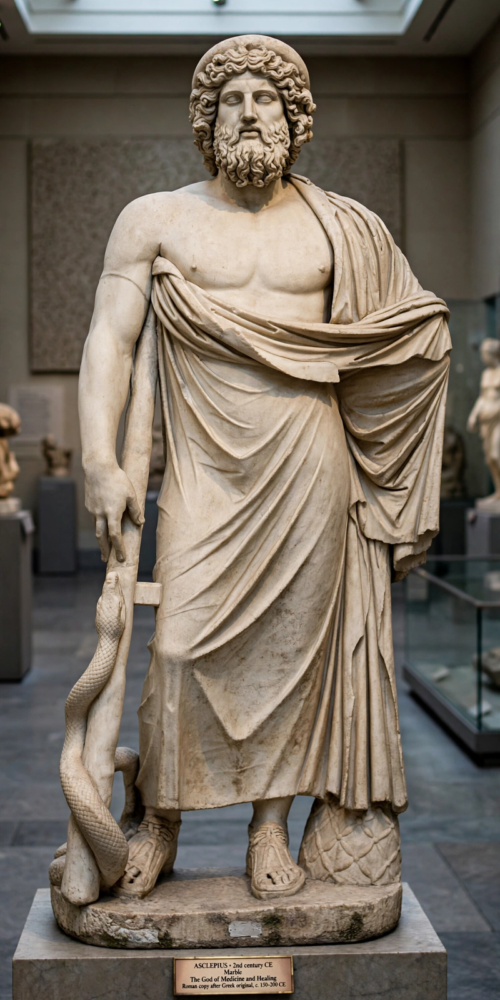

From Wikipedia, the free encyclopedia
| Asclepius | |
|---|---|
 | |
| God of | Medicine, healing, rejuvenation |
| Symbol | Rod of Asclepius (serpent-entwined staff), cock, dog |
| Parents | Apollo and Coronis |
| Consort | Epione |
| Children | Hygieia, Panacea, Iaso, Aceso, Aegle, Machaon, Podalirius |
| Roman equivalent | Aesculapius |
Asclepius (Greek: Ἀσκληπιός Asklēpiós; Latin: Aesculapius) is a hero and god of medicine in ancient Greek religion and mythology. He is the son of Apollo and Coronis, and was instructed in medicine by the centaur Chiron. Asclepius represents the healing aspect of the medical arts; his daughters are goddesses of health and remedies, among them Hygieia ("Health") and Panacea ("Universal remedy").
According to myth, Asclepius became so skilled that he could restore the dead to life. Zeus, fearing that humans would learn the art and become immortal — and angered also by Hades' complaints — killed Asclepius with a thunderbolt forged by the Cyclopes. Apollo in revenge killed the Cyclopes, and Zeus eventually placed Asclepius among the stars as the constellation Ophiuchus and restored him as a full god.
The cult of Asclepius spread across the Greek world, with major healing sanctuaries (asclepieia) at Epidaurus, Kos, and Pergamum. Patients underwent purification, made offerings, and slept in the temple precinct (incubation), expecting the god to visit them in dreams with a cure or prescription. Sacred snakes and dogs were kept at the sanctuaries. The Hippocratic Oath begins by invoking Apollo, Asclepius, Hygieia, and Panacea.
The Rod of Asclepius — a single serpent coiled around a staff — remains a widely used symbol of medicine and healthcare, and appears in the emblem of the World Health Organization. It is frequently confused with the caduceus of Hermes, which has two serpents and wings.
Categories: Asclepius | Greek gods | Health gods